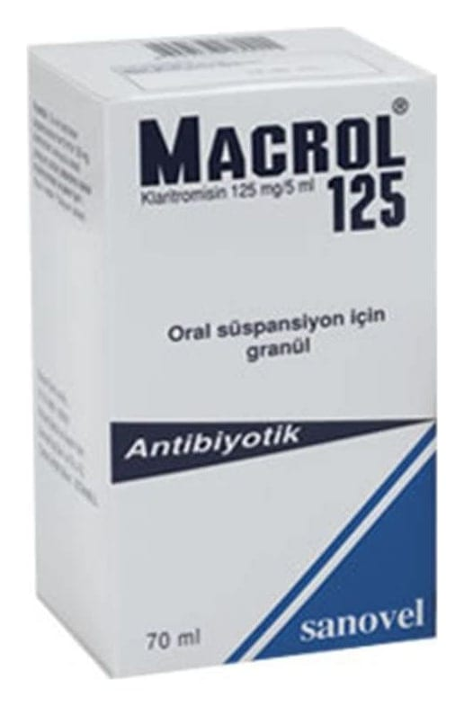

Macrol 125 mg/5 ml Oral Süspansiyon İçin Granül, 70 ml

Ne için kullanılır
KT · Bölüm 1- MACROL, su ile hazırlandığında, etkin madde olarak 5 ml'de 125 mg klaritromisin
içerir.
- MACROL 125 mg/5 ml, 70 ve 100 ml Oral Süspansiyon: Sulandırıldığında 70 ve 100 ml oral süspansiyon verebilen granülleri içeren amber renkli şişelerde, ölçülendirilmiş çift taraflı (5 ml ve 1.25 ml) kaşık ile birlikte karton kutu içerisinde satışa sunulmuştur.
- MACROL (klaritromisin), makrolid adı verilen bir gruba ait yarı-sentetik bir antibiyotiktir. Klaritromisin, bakterilere karşı etkisini, duyarlı bakterilerde protein sentezine engel olarak gösterir.
MACROL, çeşitli mikroorganizmaların neden olduğu aşağıdaki enfeksiyon hastalıklarının
tedavisinde kullanılmak içindir:
e Farenjit (yutak iltihabı), tonsillit (bademcik iltihabı), akut maksiller sinüzit (sinüs iltihabı) gibi üst solunum yolu enfeksiyonları,
e Pnömoni (zatürre), kronik bronşit gibi alt solunum yolu enfeksiyonları,
e Akut otitis media (orta kulak iltihabı),
vV11
e Duyarlı mikroorganizmaların neden olduğu komplike olmayan, çeşitli deri ve yumuşak doku enfeksiyonları,
e Mikobakteri adı verilen özel bir bakteri türünün neden olduğu enfeksiyonlar.
- 6 ay- 12 yaş arasındaki çocuklarda yürütülen klinik çalışmalar klaritromisin pediatrik süspansiyon ile yapılmıştır. Bu nedenle 12 yaşından küçük çocuklar MACROL Süspansiyon kullanmalıdır.